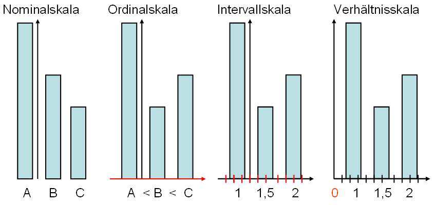
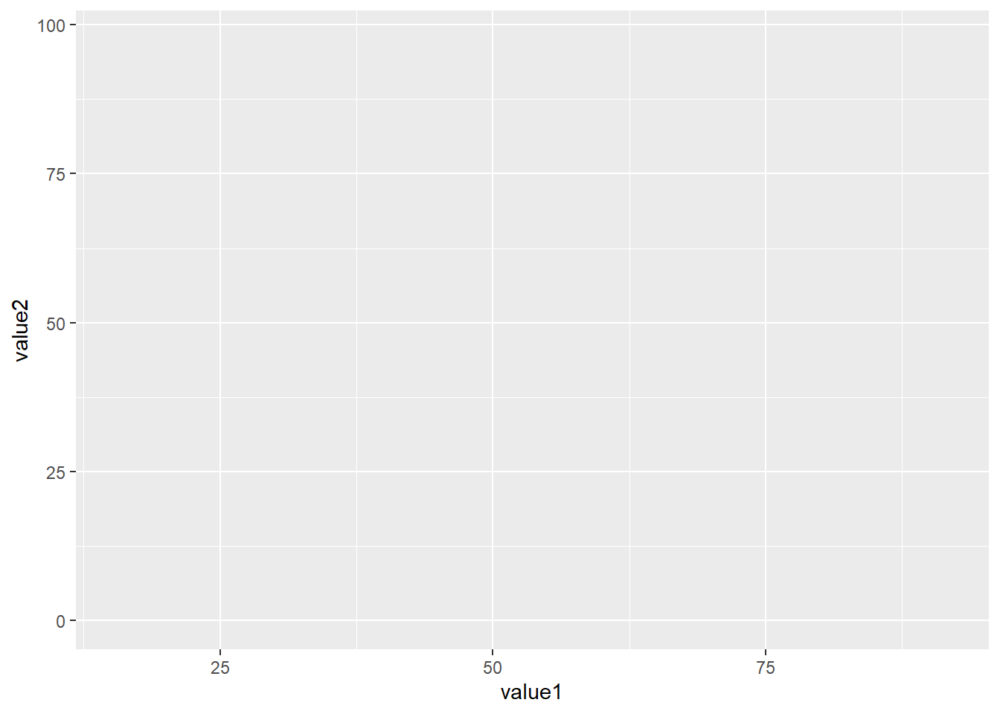
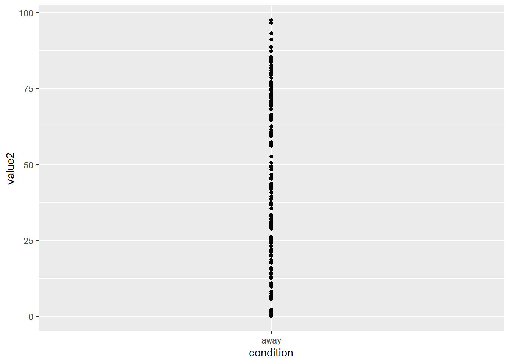
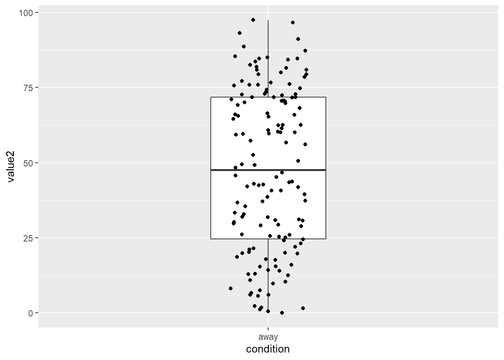
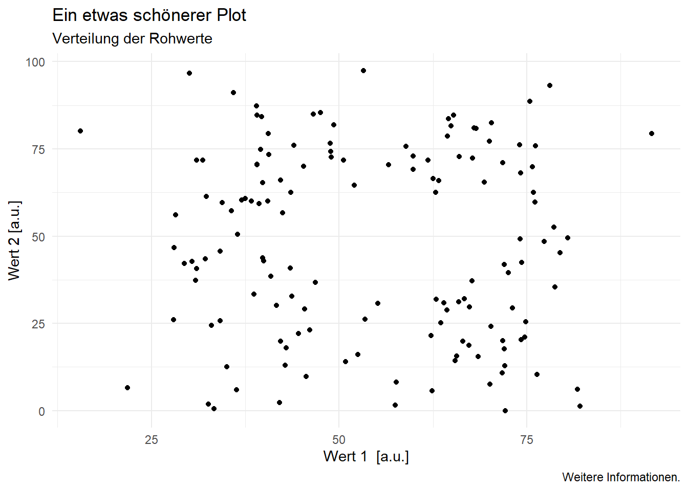
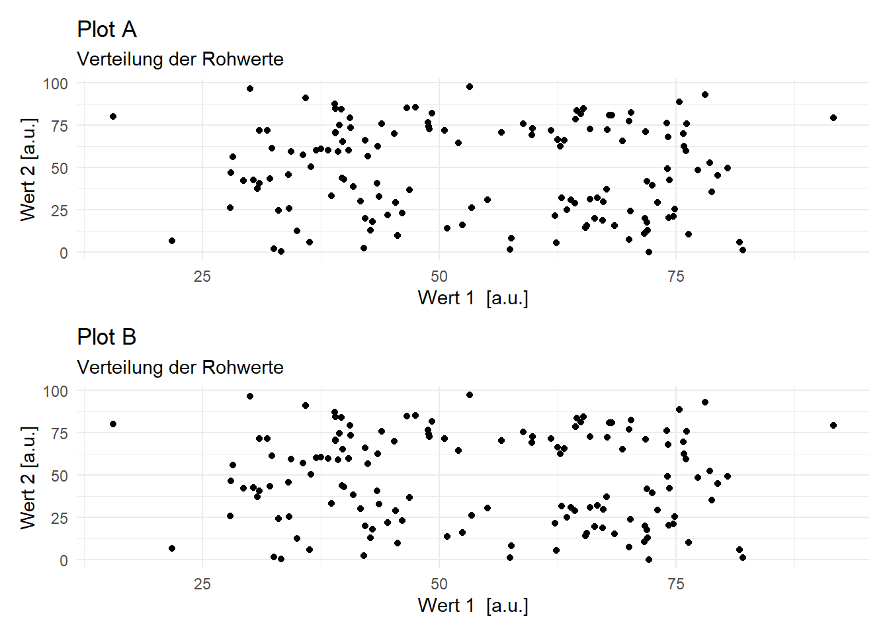
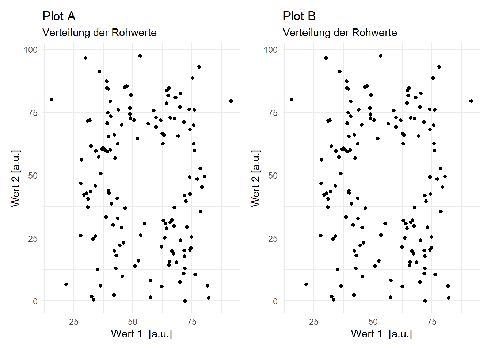
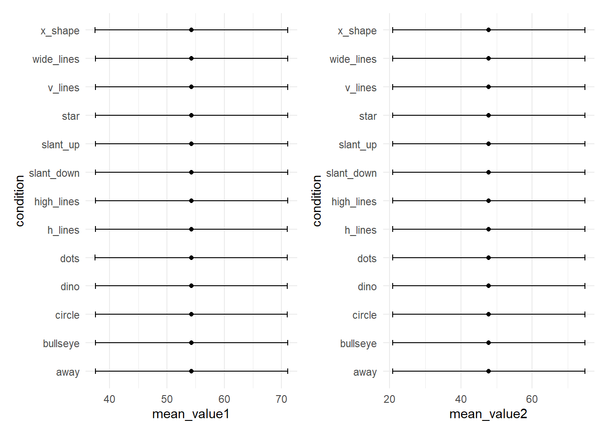
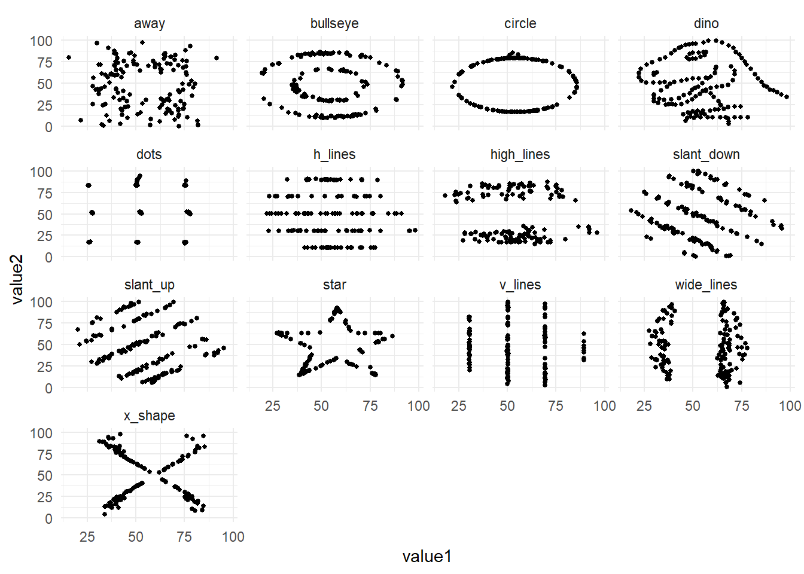

library(tidyverse)17 Datenvisualisierung mit {ggplot2}
Hands-on: Vorbereitung
- Erstellen oder öffnen Sie ein RProject in R.
- Laden Sie den Datensatz hier herunter und speichern Sie diesen in dem Ordner
dataim Ordner Ihres RProjects. - Öffnen Sie ein neues RScript (
.R) oder RMarkdown-File (.Rmd). In einem RMarkdown-File können Code und Text verbunden werden und die die Outputs des Codes (z.B. Grafiken) werden anzeigt.
Das gg im Package {ggplot2} und der Funktion ggplot() steht für Grammar of Graphics. Diese besagt, dass alle Grafiken aus definierten Komponenten zusammengesetzt werden können und sich damit vollständig beschreiben lassen. Das Kennen dieser Komponenten macht den anfangs oft etwas unintuitiven Aufbau von {ggplot2} verständlicher.
Eine Grafik enthält mindestens folgende 3 Komponenten:
Daten
Geome: sichtbare Formen (aesthetics), z.B. Punkte, Linien oder Boxen
Koordinatensystem/Mapping: Verbindung von Daten und Geomen
Weitere optionale Komponenten sind:
Statistische Parameter
Positionen
Koordinatenfunktionen
Facets
Scales
Themes
In dieser Einführung wird auf die ersten drei Komponenten, sowie auf Facets und Themes eingegangen.
Beim Laden des Packages tidyverse wird automatisch das Package {ggplot2} geladen.
17.1 Daten
Die wichtigste Komponente einer Grafik sind die Daten. Bevor eine Grafik erstellt wird, müssen die Eigenschaften des Datensatzes bekannt sein.
# Einlesen des Datensatzes
d <- read.csv("data/DatasaurusDozen.csv") |>
mutate(condition = as.factor(condition)) # Variable condition zu Faktor konvertieren
# Datensatz anschauen
glimpse(d)Rows: 1,846
Columns: 3
$ condition <fct> away, away, away, away, away, away, away, away, away, away, …
$ value1 <dbl> 32.33111, 53.42146, 63.92020, 70.28951, 34.11883, 67.67072, …
$ value2 <dbl> 61.411101, 26.186880, 30.832194, 82.533649, 45.734551, 37.11…17.1.1 Datenformat
Am einfachsten ist das Plotten mit ggplot(), wenn die Daten im long-Format vorliegen. Das bedeutet:
Jede Variable, die gemessen/erhoben wird, hat eine Spalte (z.B. Versuchspersonennummer, Reaktionszeit, Taste).
Jede Messung hat eine Zeile.
Die hier eingelesenen Daten sind schon im long-Format.
17.1.2 Variablen
Für die Grafik ist es relevant, welches Skalenniveau die zu visualisierenden Variablen haben. Je nach Anzahl Variablen und den entsprechenden Skalenniveaus eignen sich andere Grafik-Formate. Eine häufige Schwierigkeit beim Visualisieren der Daten ist, dass die Daten nicht das für den gewählten Plot passenden Skalenniveaus haben.

Hands-on: Datensatz anschauen
Schauen Sie sich den Datensatz an.
- Wie viele unterschiedliche Variablen gibt es?
- Wie heissen die Variablen?
- Welches Skalenniveau haben sie vermutlich?
17.1.3 Teile des Datensatzes auswählen: Subsetting
Wenn nur ein gewisser Teil der Daten visualisiert werden soll, muss der Datensatz gefiltert werden. Der aktuelle Datensatz enthält beispielsweise verschiedene Bedingungen, jeweils mit Werten für Variable value1 und value2. Folgende 13 Bedingungen sind enthalten:
unique(d$condition) [1] away bullseye circle dino dots h_lines
[7] high_lines slant_down slant_up star v_lines wide_lines
[13] x_shape
13 Levels: away bullseye circle dino dots h_lines high_lines ... x_shapeFürs erste entscheiden wir uns für die Bedingung away.
d_away <- d |>
filter(condition == "away")Wir können für diese Bedingung zusätzlich summary statistics berechnen, hier Mittelwert und Standardabweichung.
d_away_summary <- d_away |>
summarise(mean_value1 = mean(value1),
sd_value1 = sd(value1),
mean_value2 = mean(value2),
sd_value2 = sd(value2))
glimpse(d_away_summary)Rows: 1
Columns: 4
$ mean_value1 <dbl> 54.2661
$ sd_value1 <dbl> 16.76982
$ mean_value2 <dbl> 47.83472
$ sd_value2 <dbl> 26.93974Die Werte geben einen Anhaltspunkt, in welchem Bereich sich die Werte bewegen werden. Dies ist wichtig, wenn beispielsweise die Achsenabschnitte manuell festgelegt werden sollen.
17.1.4 Plot
In den folgenden Beispielen werden die Daten der Bedingung away verwendet. Als erstes Argument wird der Funktion ggplot() der Datensatz übergeben (data = data_away).
ggplot(data = d_away)
17.2 Mapping
Das mapping beschreibt, welche Variable auf der X- und Y-Achse abgetragen werden sollen. Es wird also definiert, wie die Variablen auf die Formen (aesthetics) gemappt werden sollen. Am einfachsten wird dies zu Beginn festgelegt (das mapping kann aber auch in der Funktion geom_ selbst definiert werden). Weitere Variablen könnten als Argumente z.B. unter group = ... oder color = ... eingefügt werden.
ggplot(data = d_away,
mapping = aes(x = value1,
y = value2)) 
Die Grafik verfügt nun über Achsen, diese werden automatisch mit den Variablennamen beschriftet. Da noch keine Formen (geoms) hinzugefügt wurde ist die Grafik in der Mitte aber leer.
17.3 Geom / Formen
Als dritte Komponente wird in ggplot() die Form mit geom_ hinzugefügt. Jede Form, die eingefügt wird, benötigt Angaben zum mapping. Falls kein mapping angegeben wird, wird dieses aus der ggplot()-Funktion in der ersten Zeile übernommen.
Es stehen viele verschiedene Formen zur Auswahl. Beispielsweise werden mit geom_point() Punkte erstellt, mit geom_line() Linien, mit geom_boxplot Boxplots, usw. Bei der Wahl der passenden Form kommt es einerseits auf die Daten an. Sind die Daten z.B. Faktoren oder numerische Werte (siehe auch Skalenniveau oben)? Wie viele Variablen werden gleichzeitig in die Grafik eingebunden? Andererseits ist es wichtig, was mit der Grafik gezeigt werden soll: Unterschiede? Gemeinsamkeiten? Veränderungen über Zeit?
ggplot(data = d_away,
mapping = aes(x = condition,
y = value2)) +
geom_point()
Geome zur Visualisierung von Datenpunkten:
- Punkte / Scatterplots -
geom_point() - Punkte leicht verteilt -
geom_jitter()2
Geome zur Visualisierung von Verläufen:
- Linien -
geom_line()
Geome zur Zusammenfassung von Datenpunkten:
- Histogramme -
geom_histogram() - Mittelwerte und Standardabweichungen -
geom_pointrange() - Dichteplots -
geom_density() - Boxplots -
geom_boxplot() - Violinplots -
geom_violin()
Geome zur Visualisierung von Anteilen: - Barplots - geom_bar()
Hands-on: Geoms
Welche geoms eignen sich für welches Skalenniveau und welche Variablenanzahl?
Tipps:
- Schauen Sie sich den Datensatz mit
glimpse(),head()odersummary()an. - Schauen Sie sich die verschiedenen Formen von Plots hier an.
17.3.1 Kombinieren von mehreren geoms in einer Grafik
Teilweise werden in Visualisierungen mehrere geoms kombiniert. In vielen Fällen macht es beispielsweise Sinn, nicht nur die Rohwerte oder Werte für jedes Subjekt, sondern in derselben Grafik auch zusammenfassende Masse, z.B. einen Boxplot, zu visualisieren.
Verwenden verschiedener geoms in einem Plot:
ggplot(data = d_away,
mapping = aes(x = condition,
y = value2)) +
geom_boxplot(width = 0.3) +
geom_jitter(width = 0.1) 
Kombiniert werden können aber nicht nur verschiedene Formen, sondern auch mehrere Datensätze. Dies kann in ggplot() einfach umgesetzt werden indem mehrere Geoms übereinandergelegt werden und nicht das mapping aus der ggplot()-Funktion genutzt wird. Stattdessen wird für jedes geom ein separater Datensatz und ein separates mapping spezifiziert.
ggplot(data = d_away,
mapping = aes(x = condition,
y = value2)) +
geom_jitter(width = 0.1) + # verwendet Datensatz "d_away"
geom_point(data = d_away_summary, # verwendet Datensatz "d_away_summary"
aes(x = "away", y = mean_value1), # condition ist nicht im Datensatz enthalten, deshalb hier hardcoded
color = "red", # Punkt rot einfärben
size = 3) # Punkt vergrössern
17.4 Beschriftungen und Themes
Schönere und informativere Plots lassen sich gestalten, wenn ein Titel hinzugefügt, die Achsenbeschriftung angepasst und das theme verändert wird:
ggplot(data = d_away,
mapping = aes(x = value1,
y = value2)) +
geom_point() +
labs(title = "Ein etwas schönerer Plot",
subtitle = "Verteilung der Rohwerte",
x = "Wert 1 [a.u.]",
y = "Wert 2 [a.u.]",
caption = "Weitere Informationen.") +
theme_minimal()
Unter caption = ... kann beispielsweise ergänzt werden, ob es sich bei den Fehlerbalken um Standardabweichungen, Standardfehler oder Konfidenzintervalle handelt.
Hands-on
Erstellen Sie eine Grafik.
Fügen Sie mit
labs()passende Beschriftungen hinzu. Gibt es noch weitere, oben nicht verwendete Optionen?Wechseln Sie das
theme. Welches gefällt Ihnen am besten?theme_bw()theme_classic()theme_dark()- … (schreiben Sie
theme_und drücken SieTab, um weitere Vorschläge zu sehen.)
17.5 Daten plotten: Tipps und Tricks
Hands-on: Informative Grafik erstellen
Im Folgenden können Sie den ganzen Datensatz (also nicht mehr d_away, sondern d) mit Visualisierungen erkunden.
Sie können entweder in Ihrem RScript / RNotebook weiterarbeiten oder Sie können das GUI (graphical user interface) von {esquisse} verwenden, welches für Sie den Code schreibt.
Welche
geom_s/Formen eignen sich gut für diesen Datensatz?Wie kann man Bedingungen miteinander vergleichen?
Wie können Grösse und Farbe der
geom_s bestimmt werden?Welche Abbildungen können alle 3 Variablen des Datensatzes berücksichtigen? (Tipp: mit
facet_wrap(~ variablennamen)wird für jede Stufe der Variable ein eigenes Fenster erstellt.)Wie passt man Schriftgrössen an?
Können Sie eine Grafik speichern?
Bei der Arbeit mit {esquisse}: Lassen Sie sich den Code direkt ins RScript / RNotebook einfügen und verändern Sie den Code dort weiter.
17.5.1 Daten plotten mit esquisser()
Um in RStudio ein GUI für das Datenvisualisieren zu verwenden, kann das Package {esquisse} genutzt werden.
Installieren Sie das Package {esquisse} mit
install.packages("esquisse")in der Konsole oder überTools>Install packages...Geben Sie in Ihrer Konsole
esquisse::esquisser()ein und wählen Sie dann unterImport Dataden schon eingelesenen DatensatzDatasaurusDozen.csvaus.
17.5.2 Mehrere Plots in einer Grafik darstellen
Mit dem Package patchwork können mehrere Plots in einem geplottet werden.
library(patchwork)
p1 <- ggplot(data = d_away,
mapping = aes(x = value1,
y = value2)) +
geom_point() +
labs(title = "Plot A",
subtitle = "Verteilung der Rohwerte",
x = "Wert 1 [a.u.]",
y = "Wert 2 [a.u.]") +
theme_minimal()
p2 <- ggplot(data = d_away,
mapping = aes(x = value1,
y = value2)) +
geom_point() +
labs(title = "Plot B",
subtitle = "Verteilung der Rohwerte",
x = "Wert 1 [a.u.]",
y = "Wert 2 [a.u.]") +
theme_minimal()
p1 + p2
Oder auch unter einander:
p1 / p217.5.3 Visualisieren von Modellen
Mit der Funktion ggPredict() aus dem Package {ggiraphExtra} können die Outputs von Analysemodellen dargestellt werden:
d_m1 <- tibble(x = c(1, 2, 3, 4, 5, 6, 7, 8, 9, 10),
y = c(12, 42, 21, 34, 73, 40, 65, 53, 78, 89))
m1 <- lm(y ~x,
data = d_m1)
ggiraphExtra::ggPredict(m1,interactive=TRUE)
Hands-on: Interaktive Modellplots
Erstellen Sie eine zusätzliche Variable z indem Sie 10 Werte für z einfügen und plotten Sie das Modell
d_m2 <- tibble(x = c(1, 2, 3, 4, 5, 6, 7, 8, 9, 10),
y = c(12, 42, 21, 34, 73, 40, 65, 53, 78, 89),
z = c(...))
m2 <- lm(y ~x + z,
data = d_m2)
ggiraphExtra::ggPredict(m2,interactive=TRUE)17.5.4 Grafik abspeichern
Eine Grafik lässt sich abspeichern unter dem Reiter Plots > Export oder mit der Funktion ggsave().
17.6 Wieso ist Plotten so wichtig?
Studiendaten können wichtige Informationen enthalten, die ohne Grafiken übersehen werden können (vgl. Rousselet, Pernet und Wilcox, 20173). Das Visualisieren der Rohdaten kann Muster zum Vorschein bringen, die durch statistische Auswertungen nicht sichtbar sind. Die Wichtigkeit von Datenvisualisierung für das Entdecken von Mustern in den Daten zeigte Francis Anscombe 1973 mit dem Anscombe’s Quartet. Dies diente als Inspiration für das Erstellen des “künstlichen” Datensatzes DatasaurusDozen. Verschiedene Rohwerte können dieselben Mittelwerte, Standardabweichungen und Korrelationen ergeben. Nur wenn man die Rohwerte plottet, erkennt man, wie unterschiedlich die Datenpunkte verteilt sind.
Dies wird ersichtlich, wenn wir die Mittelwerte und Standardabweichungen für jede Gruppe berechnen und plotten:
# Mittelwert und Standardabweichung für jede Bedingung berechnen (Variable: value1)
p_value1 <- d |>
group_by(condition) |>
summarise(mean_value1 = mean(value1),
sd_value1 = sd(value1)) |>
ggplot(mapping = aes(x = mean_value1,
y = condition)) +
geom_point() +
geom_errorbar(aes(xmin = mean_value1 - sd_value1,
xmax = mean_value1 + sd_value1),
width = 0.2) +
theme_minimal()
# Mittelwert und Standardabweichung für jede Bedingung berechnen (Variable: value2)
p_value2 <- d |>
group_by(condition) |>
summarise(mean_value2 = mean(value2),
sd_value2 = sd(value2)) |>
ggplot(mapping = aes(x = mean_value2,
y = condition)) +
geom_point() +
geom_errorbar(aes(xmin = mean_value2 - sd_value2,
xmax = mean_value2 + sd_value2),
width = 0.2) +
theme_minimal()
# Plotten
p_value1 + p_value2
Und dann die Rohwerte visualisieren:
# Rohwerte plotten
d |>
ggplot(aes(x = value1, y = value2)) +
geom_point(size = 1) +
facet_wrap(~condition) +
theme_minimal()
Die Daten sind völlig unterschiedlich verteilt, obwohl die Mittelwerte, Standardabweichungen und die Korrelation in allen 13 Bedingungen nahezu identisch ist.
Hier sehen Sie das Ganze animiert:

17.7 Inspiration und weiterführende Ressourcen zur Datenvisualisierung mit ggplot()
Grafiken für verschiedene Datenarten: From Data to Viz
Simple bis crazy Chartideen: R Charts: Ggplot
Farben für Grafiken: R Charts: Colors, noch mehr Farben
Dokumentation von
ggplot2Kurzweilige, kompakte und sehr informative Informationen und Videos über das Erstellen von Grafiken in
ggplotfinden Sie hier: Website PsyTeachR: Data Skills for reproducible researchHier ist der Start der PsyTeachR Videoliste von Lisa deBruine, dort finden sich auch hilfreiche Kurzvideos zu Themen von Daten einlesen bis zu statistischen Analysen. Beispielsweise zu Basic Plots, Common Plots und Plot Themes and Customization
Einführung in R von Andrew Ellis und Boris Mayer
Matejka, Justin, and George Fitzmaurice. 2017. “Same Stats, Different Graphs: Generating Datasets with Varied Appearance and Identical Statistics Through Simulated Annealing.” In Proceedings of the 2017 CHI Conference on Human Factors in Computing Systems, 1290–94. Denver Colorado USA: ACM. https://doi.org/10.1145/3025453.3025912.↩︎
Achtung: es darf immer nur in Richtung der kategorialen Variable “gejittert” werden. Sonst verfälscht man die Zahlenwerte!↩︎
Rousselet, G. A., Pernet, C. R., & Wilcox, R. R. (2017). Beyond differences in means: robust graphical methods to compare two groups in neuroscience. European Journal of Neuroscience, 46(2), 1738-1748. https://onlinelibrary.wiley.com/doi/abs/10.1111/ejn.13610↩︎